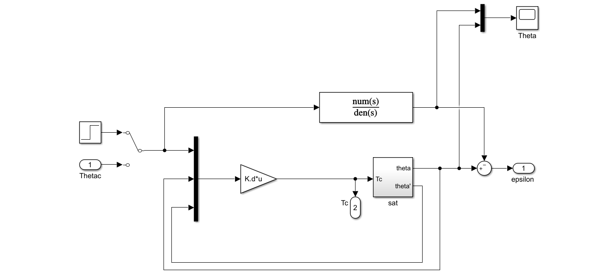
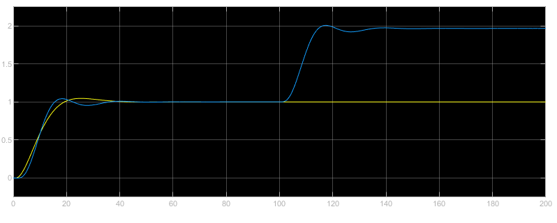
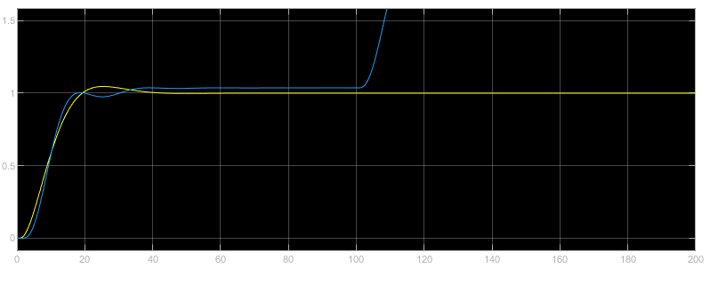
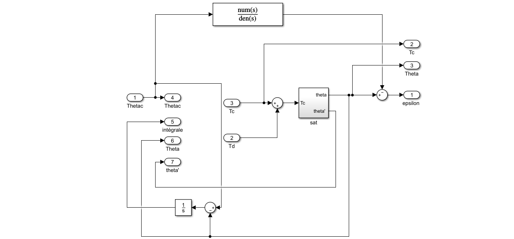
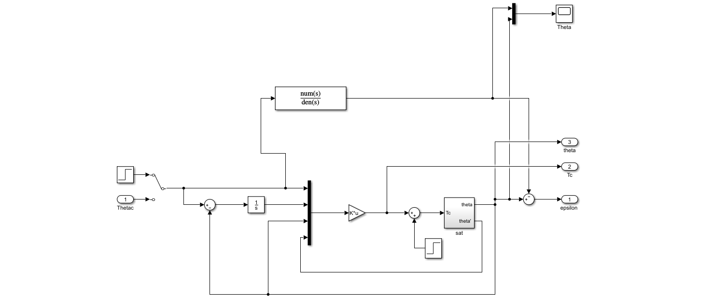
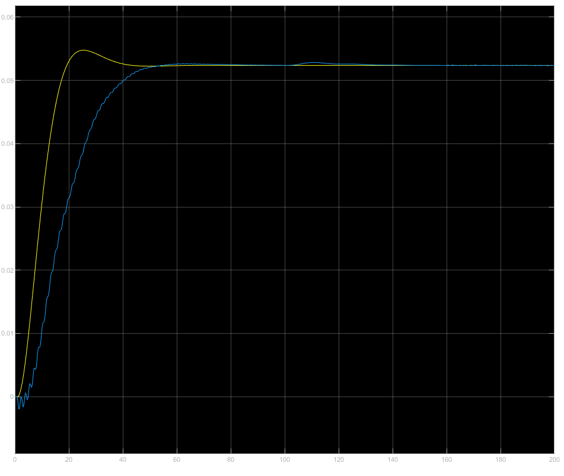

This project aims to model the physical behavior of a true satellite and to generate robust control laws for AOCS. In addition to the central body and the solar panels, the satellite is composed of 4 long flexible appendices oriented in different directions and fixed at different positions distinct from the center of gravity.
During the mission, four different modes with specific requirements can be operated: acquisition and safehold mode, coarse transition mode, normal mode and orbit control mode. The scientific mission is performed during the normal mode. It requires accurate pointing and therefore a particularly high level of performance and robustness of the AOCS.
The objectives of the project are threefold:
implement a realistic model of the satellite including actuator, sensor and estimator,
design control laws to ensure a fine pointing during normal operation,
validate the stability and the performance properties of the controlled system.
About
Robust Hinf control enables both performance and robustness.
It is an alternative to μ-analysis in case of low structured uncertainties.
Implementing Hinf control
Hinf design problem consists in finding a controller K that minimises the infinite norm of
the close-loop transfer between exogenous inputs and outputs for given weighting functions and a given model.
Design Model
We built a Simulink diagram with one exogenous input
and two exogenous outputs and .
Weighting functions
Since it is not possible to minimize several transfer functions for the whole frequency range (mixed-sensivity issue),
we chose to use dynamic weighting functions to help shape the closed-loop response characteristics.
Within this framework, we minimized both weighted sensitivity and weighted control input.
The servo-loop performance z1
(tracking error) is critical for low frequencies so we implemented a low-pass filter for the
sensitivity transfer function.
%Weighting functions
W1=tf([100],[1000 1]); % weight on the tracking error
W2=tf([1],[1]); & weight on the control input
Code and simulation
The hinfstruct routine of the Robust Control Toolbox was used to calculate the Hinf controller.
% design model
sys=linmod('HinfBO');
P=ss(sys.a, sys.b, sys.c, sys.d);
% controller
no=1; % number of controller outputs
ni=3; % number of controller inputs
K0=ltiblock.gain('K0',no,ni); % controller initialization: no x ni static gain
CL0=lft(P,K0); %close-loop to be parametrized
% call to hinfstruct
CL0W=blkdiag(W1,W2)*CL0 ; % weighted standard form
options=hinfstructOptions('RandomStart',5);
[CL,gam]=hinfstruct(CL0W,options);
K=ss(CL.Blocks.K0);
CL=ss(CL);
For the simulation, we applied a torque disturbance at t>100s and a start tracker noice from t=160s.

This graph shows the response with the first weighting functions. Before t<100s, the tracking error is really low,
down to 0.0005.

This graph was obtained with the second weighting functions. The tracking error was 0.035. Here again, the
torque perturbation was not rejected hence the need of adding an integrator later.

Adding an integrator
Without integrator, our controller could not reject the torque perturbation so we implemented one.
Design model
With a new integrator, we added a new exogenous input, z3 = θ to our augmented
design model.

Code and simulation
no=1; % number of controller outputs
ni=4; % number of controller inputs
K0=ltiblock.gain('K0',no,ni); % controller initialization: no x ni static gain
CL0=lft(P,K0); % parametric closed-loop (genss) to be optimized
%weighting functions
W1=tf([100],[1000 1]); % weight on the tracking error
W2=2;%W2=tf([1],[1]); % weight on the control input
W3=2; %weight on the input reference
% call to hinfstruct
CL12=blkdiag(W1,W2)*CL0(1:2,1); % mixed-sensitivity
CL3=W3*CL0(3,2); % perturbation rejection
CL0W=blkdiag(CL12,CL3); % weighted standard form
options=hinfstructOptions('RandomStart',5);
[CL,gam]=hinfstruct(CL0W,options);
K=ss(CL.Blocks.K0);
CL=ss(CL);

At t=100s, the torque perturbation was effectively rejected.
